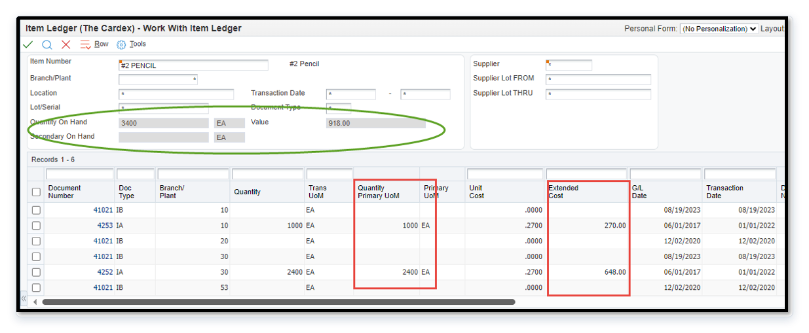

Handling Cardex Variance
Use RapidReconciler and JD Edwards together to identify and correct cardex discrepancies. This walkthrough covers the full workflow — from spotting the variance, to validating it in JDE, to taking one of the two corrective paths: fix it at the source in JDE, or adjust RapidReconciler to sync with JDE.
Overview
A cardex integrity variance occurs when the summarized quantity or extended amount in the item ledger does not match the on-hand balances in JD Edwards. Common causes include:
- Rounding errors accumulated over time
- Manual overrides of transaction costs
- Incorrect average cost calculations
- Unit of measure changes
JD Edwards is the system of record. RapidReconciler is a tool, not a system of record. RapidReconciler calculates its cardex variance only from the point in time when the program was first initiated, or from the date the data was last reset — it does not have visibility into transaction history that predates that point. An adjustment made in RapidReconciler moves RapidReconciler to JD Edwards, never the reverse. Nothing you do on the Cardex Variance page writes to JDE.
How RapidReconciler Helps
Without a dedicated tool, identifying cardex integrity variances requires manually summarizing the item ledger in Excel, excluding memo transactions, and comparing the totals to the Item Location table (F41021) — a process that must be repeated for every item, every period. RapidReconciler performs this comparison automatically across the entire item population on every refresh cycle.
The Cardex Variance page surfaces only the items where a discrepancy exists, along with the exact quantity and dollar variance for each. This eliminates the manual extraction and comparison process entirely and makes it immediately clear which items require investigation and what type of correction is needed.
| What RapidReconciler Does | Benefit |
|---|---|
| Compares summarized F4111 to F41021 automatically for every item on every refresh. | No manual extraction or calculation required. |
Excludes memo transactions (ILIPCD = "X") and applies UOM conversions automatically. | Results are accurate without manual data manipulation. |
| Identifies whether the variance is a quantity issue, a dollar issue, or both. | Directs the user to the correct corrective action immediately. |
| Ranks the worklist by amount variance and tests each row against the company’s materiality tolerance. | You work the items that matter first instead of chasing rounding. |
| Offers two corrective paths on the item — Record a fix made at the source in JDE, or Adjust RapidReconciler to sync with JDE. | The correction is taken where it belongs, and the record of which one you chose survives. |
| Logs every adjustment to the Adjustment ledger with an Undo. | The correction is reversible and auditable — no data reset required. |
Before You Begin
| Item | Detail |
|---|---|
| Who should perform this | Cost accountant or inventory accountant with appropriate JD Edwards security. |
| RapidReconciler access | Required to identify and confirm variances. |
| JD Edwards access | Required to validate and correct the underlying data. |
| Average cost environments | The dollars-only IA correction procedure requires an additional UDC configuration step — read the full guide before proceeding. |
Steps
| # | Step | Purpose |
|---|---|---|
| 1 | Open the Cardex Variance Worklist | Surface the item, quantity variance, and dollar variance. |
| 2 | Validate the Variance in JD Edwards | Determine whether JDE or RapidReconciler is the source of the discrepancy. |
| 3 | Dollars-Only Adjustment in JD Edwards | JDE was off — correct the dollar discrepancy in JDE without affecting on-hand quantity, then Record it. |
| 4 | Adjust Beginning Balance in RapidReconciler | JDE ties — sync RapidReconciler to it with a reversible, logged adjustment. |
| 5 | Confirm the Result | Verify Qty Var and Amt Var are zero. |
Key principle — validate first, then take one path, not both. Steps 3 and 4 are a fork, and your JDE check in Step 2 decides which one you take:
- JDE was off — fix it in JDE (Step 3) or route it to IT, then click
Record. RapidReconciler clears the item on its next refresh. No adjustment. - RapidReconciler is off — JDE ties, so click
Adjustand sync RapidReconciler up to the cardex (Step 4). JDE is untouched.
Once an item is recorded as corrected at source, the Adjust button is disabled for it — adjusting after a source fix would mask the correction.
Step 1 — Open the Cardex Variance Worklist in RapidReconciler
RapidReconciler compares the summarized item ledger (F4111) against the on-hand balance in the Item Location table (F41021) for every item in the system. It automatically excludes memo transactions, applies unit of measure conversions, and respects the cost level setting for average cost items.
Important. RapidReconciler calculates its cardex variance only from the point in time when the program was initiated, or from the date the data was last reset. It does not have visibility into transaction history that predates that starting point. JD Edwards is always the system of record. Any variance shown in RapidReconciler should be validated against JD Edwards before taking corrective action. The Adjust action exists to bring RapidReconciler into alignment with JD Edwards — not to correct JD Edwards data.
1.1 Open the item
Two ways in:
- From Home. Open the Cardex Variance tab, then open a card to see its item grid. Clicking an item opens the Cardex Variance page focused on that item, its branch, and its costing dimension.
- By typing the item. On the Cardex Variance page, type an item number and branch into the entry box. This works whether or not the item currently carries a variance — you can open an item that ties in order to align it against something you found in JDE.
The scope band across the top of the page names the company, item, branch and dimension you are working, along with the quantity and amount variance for that item.
1.2 Read the worklist grid — column dictionary
Every header on the Cardex Variance grid, and what it holds:
Grain. One grid row is an item at a branch, plus a location and lot where the costing grain keeps them. Where a revaluing cost method folds several locations or lots together, QOH, AOH, Qty Var, Amt Var and Trans Count are the sums across what folded, and Location and Lot read (multi).
| Column | What it holds |
|---|---|
| Item | The item’s JDE second item number — the number you search JDE by. |
| Branch | The JDE branch/plant the stock sits in. |
| Location | The storage location inside that branch. |
| Lot | The lot or serial number the stock is held under. |
| Method | The cost-ledger code of the F4105 cost record RapidReconciler matched for this item — 07 standard, 02 weighted average, 09 manufacturing last; XX or blank means no cost record matched. |
| Level | The item’s inventory cost level from the item master: 1 = one cost for the item, 2 = a cost per branch, 3 = a cost per location and lot. It sets the grain the cost is held at. |
| QOH | Quantity on hand for the row, as RapidReconciler holds it from F41021. |
| UOM | The primary unit of measure QOH and Qty Var are counted in. |
| Unit Cost | AOH divided by QOH — on a folded row, the quantity-weighted average cost the stock on hand is actually carrying, not a figure read straight out of a cost table. |
| AOH | Amount on hand: the extended value of QOH. The money the on-hand quantity is carrying. |
| Qty Var | A signed quantity difference: how much the item ledger moved since the reset baseline, minus how much on hand moved over the same span. Zero means the two agree; the sign says which side moved more. |
| Amt Var | The same subtraction in money. This is the figure the worklist ranks by and tests against the company’s materiality threshold. |
| Last Activity | The most recent date RapidReconciler holds an item-ledger row for this item, counting only rows older than yesterday. |
| Trans Count | A count of the item-ledger rows RapidReconciler holds for this item, counting only rows older than yesterday — the same set whose newest date shows in Last Activity. It is a row count on one item: not a variance, not an amount, and not the Transaction Variance surface. |
Do not read the cost environment off the Method column. Method reports which F4105 cost row RapidReconciler matched, not the cost method the item is assigned to in JD Edwards — JDE does not expose that field to RapidReconciler. Confirm standard versus average cost in JDE before following the average-cost procedure in Step 3.
1.3 Determine the type of variance
| Qty Var | Amt Var | Interpretation | Next Step |
|---|---|---|---|
0 | 0 | No variance — no action needed. | Stop. |
| Non-zero | Any | Quantity discrepancy — investigate quantity before addressing dollars. | Step 2 |
0 | Non-zero | Dollar-only variance. | Step 2 |
Materiality tolerance. Each company carries its own cardex tolerance, edited beside the totals at the top of the page. A variance inside the tolerance is not worth chasing; the worklist ranks by Amt Var so the items that matter sort to the top. Offsetting values on the same item usually point at incorrect transaction processing, or at GL class codes or primary units of measure that were changed after the fact.
1.4 Look at the transactions behind the row
Open a row to see the RapidReconciler cardex transactions behind its variance, and export them to Excel if you want them alongside the JDE export you build in Step 2. Investigate asks RapidReconciler to read the item’s position and suggest where the break is. Use it to aim the JDE validation in Step 2; it does not replace that validation.
Note. The page reflects data as of the most recent refresh. Transactions that occurred after the last import are not reflected until the following refresh completes.
Step 2 — Validate the Variance in JD Edwards
Before making any correction, confirm the discrepancy by reviewing the item’s transaction history directly in JD Edwards. Since JD Edwards is the system of record, this step determines the true source of the variance — and it is the step that decides which of the two corrective paths you take. RapidReconciler cannot see live JDE, so it will not make this call for you.

2.1 Export the item ledger for the item
Export all cardex transactions for the item from the JDE item ledger (P4111) to Excel.
2.2 Exclude memo transactions
Remove all rows where column ILIPCD in table F4111 equals "X". Memo transactions include work order scrap, lot releases, and certain warehousing movements. These do not impact the on-hand balance and must be excluded from the calculation.
2.3 Summarize the remaining transactions
Total the following columns from the remaining rows:
- Quantity — expressed in the primary unit of measure.
- Extended Amount.
2.4 Compare to JD Edwards balances
Compare your summarized totals to the on-hand quantity and value displayed in JD Edwards.

| Result | Interpretation | Next Step |
|---|---|---|
| Quantity and amount both match JDE. | RapidReconciler is off. JDE ties, so the variance is isolated to RapidReconciler. | Adjust to sync RapidReconciler (Step 4). |
| Amount does not match JDE. | JDE was off. A true dollar discrepancy exists in JD Edwards. | Perform a dollars-only adjustment (Step 3), then Record it. |
| Quantity does not match JDE. | JDE was off. A quantity issue exists — this guide does not cover quantity corrections in JDE. | Fix it in JDE, or route it to IT. Either way, Record it (Step 3). |
Step 3 — JDE Was Off: Dollars-Only Adjustment in JD Edwards
This is the JDE was off half of the fork. Follow this procedure only if Step 2 confirmed that a true dollar discrepancy exists in JD Edwards. If JD Edwards is correct and the variance is in RapidReconciler only, skip to Step 4. When the JDE fix is not yours to make — a quantity break, or an F41021 that was never updated for a cardex move — route it to IT and go straight to 3.7 below to record it.
3.1 Determine Your Cost Environment
- Standard Cost (Method 07) — Proceed directly to Step 3.3.
- Average Cost (Method 02) — Complete Step 3.2 first.
3.2 Average Cost Only: Disable Average Cost Update for P4114
Skip this step if the item uses standard cost.
In an average cost environment, program P4114 (Inventory Adjustments) is typically configured to recalculate the unit cost when a transaction is posted. If this recalculation runs during a dollars-only adjustment, it will change the average cost — negating the intended correction.
3.2.1 Enter UDC on the fast path, then enter 40/AV and click Find.
3.2.2 Locate program P4114 in the table.
3.2.3 Change the Description 02 value from "Y" to "N" to disable the average cost update for P4114. Do not change any other programs.
Note. This change takes effect immediately. Proceed to Step 3.3 without delay to minimize the window during which normal P4114 transactions would not update the average cost.
3.3 Process the IA Transaction
3.3.1 Navigate to Inventory Adjustments (P4114) from the applicable inventory menu.
3.3.2 Complete the following fields:
| Field | Value |
|---|---|
| Item Number | The item requiring adjustment. |
| Branch Plant | The applicable branch plant. |
| Location | The applicable location. |
| Lot Number | The applicable lot number, if applicable. |
| Extended Amount | The adjustment amount (positive to increase value, negative to decrease). |
3.3.3 Leave the following fields blank:
| Field | Why |
|---|---|
| Quantity | Must be blank — entering a quantity will change the on-hand balance. |
| Unit Cost | Must be blank — entering a unit cost will result in a quantity-based transaction. |
Critical. Leaving the Quantity and Unit Cost fields blank is what makes this a dollars-only adjustment. If either field contains a value, the transaction will not behave as intended.
3.3.4 Review and post the IA transaction. The adjustment will appear in the cardex (F4111) with the correct dollar amount and corresponding GL entries.
3.4 Verify the JD Edwards Adjustment
3.4.1 Open the item ledger (F4111) and confirm the IA transaction appears with the correct extended amount and a quantity of zero.
3.4.2 Re-export the cardex to Excel, re-apply the exclusion for ILIPCD = "X", and re-summarize to confirm the extended amount total now ties to the JD Edwards balance.
3.4.3 Verify that the corresponding GL entries have been created and posted to the correct inventory account.
3.5 Average Cost Only: Restore UDC Table 40/AV
Skip this step if the item uses standard cost.
Immediately after verifying the adjustment, restore the UDC 40/AV setting for P4114.
3.5.1 Enter UDC on the fast path, enter 40/AV, and click Find.
3.5.2 Locate program P4114 in the table.
3.5.3 Change the Description 02 value from "N" back to "Y" to re-enable the average cost update.
Warning. Leaving P4114 set to "N" will prevent the average cost from updating on future legitimate transactions. Do not skip this step.
3.6 Standard vs. Average Cost Summary
| Step | Standard Cost | Average Cost |
|---|---|---|
| 3.2 — Disable average cost update (UDC 40/AV) | Skip | Required |
| 3.3 — Process IA transaction | Required | Required |
| 3.4 — Verify the adjustment | Required | Required |
| 3.5 — Restore UDC 40/AV | Skip | Required |
3.7 Record the source fix in RapidReconciler
Back on the Cardex Variance page, click Record on the JDE was off card. Add a ticket number or a short note if you have one, then choose:
- Fixed here — you made the correction in JDE yourself.
- Routed to IT — the fix belongs to someone else and the item is flagged as awaiting it.
The item lands in the Source-fix records list on the page. Each record clears automatically once RapidReconciler refreshes and re-reads the corrected F41021 — you do not adjust anything in RapidReconciler, and you do not need a data reset. Records also append to the activity log, so the disposition shows in the Audit Center.
Recording closes the other path. Once an item is recorded as corrected at source, its Adjust button is disabled. Adjusting RapidReconciler after a source fix would move the balance twice and mask the correction you just made.
Step 4 — RR Is Off: Adjust Beginning Balance in RapidReconciler
This is the RR is off half of the fork. Take it when Step 2 confirmed that JD Edwards ties — the quantity and the amount both agree with the item ledger — and the variance exists only in RapidReconciler. Adjust syncs RapidReconciler’s on-hand position up to the cardex.
Key principle. Adjust does not change JD Edwards data. It corrects the beginning balance RapidReconciler rolls forward from, bringing RapidReconciler into alignment with JD Edwards, which is the system of record. Because RapidReconciler only tracks history from the point the program was initiated or the data was last reset, this is how you account for movement that happened before or outside that window.
Every adjustment is logged and reversible. It writes a row to the Adjustment ledger on the page, which carries an Undo.
4.1 Open the adjustment
Click Adjust on the RR is off card. Two things open below it:
- Adjust Beginning Balance — four fields in two columns. The left column is the beginning balance itself (
QtyandAmount); the right column is the variance to the cardex. The panel names the period being adjusted — the opening-balance period, not the date the data was loaded. - Current Roll Forward beside Projected Roll Forward — the item’s period-by-period position today, and what it becomes if you commit.
The four fields are linked in pairs. Type into either side of a dimension and the other side recomputes, so you can work from whichever number you actually know. Quantity and amount move independently.
4.2 Read the projection before you commit
Nothing is written while you type. The Projected Roll Forward is a what-if — it starts matched to the current roll and moves as you enter values. Check that the projected period ends read the way JD Edwards does before committing.
4.3 Commit
| You want to | Do this | Result |
|---|---|---|
| Clear a variance — JDE ties and RapidReconciler should agree. | Click clear it beside Variance to cardex. | Both variance fields go to zero, the beginning balance recomputes to the cleared baseline, and the item drops to zero on the totals and the Item position grid immediately. |
| Align an item that already ties — you opened it from Full Perpetual Details to apply something you found in JDE. | Type the JDE-correct beginning balance, then click adjust balances. | The balance is committed exactly as typed. This creates a variance on purpose — the item then rides the normal worklist and clears through the same path. |
4.4 The Adjustment ledger
Every adjustment appears in the Adjustment ledger at the bottom of the page with the account, the new beginning balance, the resulting variance, and its status. Each applied row carries an Undo.
Undo reverses the adjustment and reopens the item’s variance — it returns to the active worklist and drops off the cleared list. JD Edwards is untouched by the undo, exactly as it was untouched by the adjustment.
Do not adjust to mask a genuine JD Edwards issue. An adjustment is the right answer only when JDE ties. If JDE is wrong, the fix belongs in JDE — go to Step 3 and Record it instead. Adjusting hides the break without correcting anything, and the next period brings it back.
4.5 Close it out
Click Approved when the item reads the way you expect. That writes the close-out to the activity log for the Audit Center and collapses the adjustment and roll-forward cards.
Step 5 — Confirm the Result in RapidReconciler
When you confirm depends on which path you took.
| Path | When it clears | Where to look |
|---|---|---|
JDE was off — Record (Step 3) | On the next refresh, once RapidReconciler re-reads the corrected F41021. | Source-fix records — the record clears itself. Remove cleared tidies the list. |
RR is off — Adjust (Step 4) | Immediately on commit. | Totals and the Item position grid, plus the Adjustment ledger row. |
5.1 Confirm both variances are zero
Reopen the item and confirm that Qty Var and Amt Var both show 0.
Note. An item routed to IT stays on the list, flagged as awaiting the fix, until the JDE correction is actually made. That is the record doing its job — do not adjust it to make the number go away.
5.2 If a variance still appears
Review the item’s transaction history and repeat the validation in Step 2 before taking further action. If you adjusted and the projection turned out wrong, Undo the adjustment from the Adjustment ledger and start again from the JDE validation.
Summary Checklist
- Variance fully resolved
- Step 2 validation completed against JDE.
- One path taken, not both —
RecordorAdjust. - Where the fix was in JDE: adjustment posted (Step 3), average cost UDC restored, and the fix recorded on the page.
- Where the fix was in RapidReconciler: the projected roll forward checked before commit, and the Adjustment ledger row present.
Qty Var = 0andAmt Var = 0for the item.